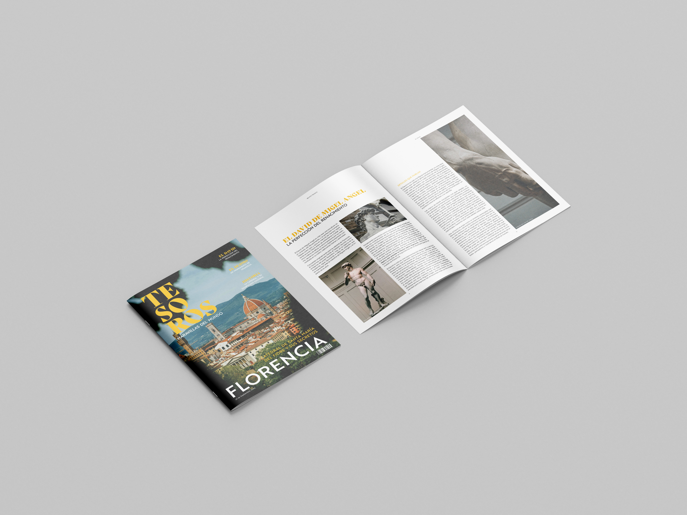

RevistaTesoros
Diseño editorial de una revista temática centrada en la ciudad de Florencia, donde se exploran sus principales íconos culturales y artísticos como el Duomo y el David de Miguel Ángel. El proyecto combina composición tipográfica, tratamiento de imagen y maquetación para crear una narrativa visual atractiva y coherente, inspirada en la estética del Renacimiento y el turismo cultural. Se trabajó en la jerarquía visual, uso del color y distribución de contenidos para lograr una experiencia de lectura dinámica y elegante.